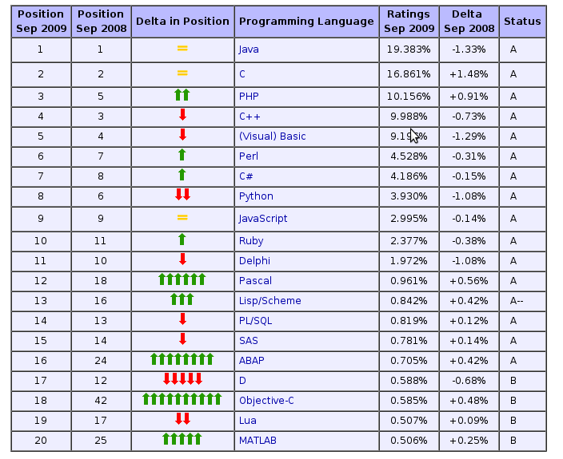

| Author: | 朱涛 |
|---|---|
| Date: | 2009-09-25 |
Python 是一种 通用 ( general purpose) 语言, 它已经在各种领域都有 了很广泛的应用.譬如:
Python 目前是 Google 的第二大开发语言.
Python语言的流行度排名.
语法
- 简洁
- 优美
- 可读
- 强大(具有优秀语言的大量特征,如namespace, dynamic, functional)
- 跨平台
哲学
- KISS
- DIY
- battery-included(所谓的自省)
支持
- 大量的第三方应用支持
社区
- 国内: CPyUG
- 国外: python mailing list
import os
import shutil
def rmsvn(path, target):
"""
remove the .svn directories recursively
>>> curdir = os.path.abspath(os.path.dirname(__file__))
>>> path = os.path.join(curdir, "testfolder")
>>> target = ".svn"
>>> rmsvn(path, target)
"""
filename = path.split(os.path.sep)[-1]
if os.path.isdir(path):
if filename == target:
shutil.rmtree(path)
else:
for file in os.listdir(path):
rmsvn(os.path.join(path, file), target)
if __name__ == "__main__":
import doctest
doctest.testmod()
Django 是一种高效, 简洁, 适合快速开发的web框架.
它有如下的特点:
如果你喜欢文本,你可以选择使用 restructuredText 来写文档, 或者Presentation.
如果你需要分析日志, Python 提供强大的系统module和正则表达式的支持, 让你很容易进行日志的分析和处理.
如果你需要自动化测试, Python 可以很方便地写出测试用倒来简化你的开发 进程.
等等.
一个例子即, 本演示即是用 Python 的 restructuredText 写成的.